AI Academy · Level 3 · Grade 8 · Week 31 · Student lesson
Safety Boundaries
Learn to understand, design, build, test and explain AI systems responsibly.
Project: Verified Study Buddy
Before you start
AI-2 Week 31: permission is tied to a defined task.
Plan time to read, investigate and explain. Keep predictions separate from observations.
Student lesson · 1 of 16
Your mission
Your learning target
I can explain the mechanism and terminology of untrusted input boundaries.
I can apply the stated procedure to a new case with a traceable result.
I can identify an assumption or limitation and design a revealing follow-up.
Remember before reading
Close your notes first. A rough first answer helps us choose the right starting point; it is not a score for your ability.
Without opening the old lesson, explain one key idea from Bias and Representation. Give an example and a mistake that the idea helps you avoid.
Without opening the old lesson, explain one key idea from Privacy by Design. Give an example and a mistake that the idea helps you avoid.
Without opening the old lesson, explain one key idea from Quality Rubrics. Give an example and a mistake that the idea helps you avoid.
After trying, check the relevant lesson or ask your teacher. Change the part of your explanation that the evidence shows was wrong.
Week 31: Safety Boundaries
Systems need refusal, warning, escalation, and human-review policies.
CREATOR MISSION
Write safe behavior for three classroom risk levels.
Creator name and date:
Readiness for the connected explanation
Recall External side effects and recovery. Explain why a recorded result needs its input conditions and evidence source before it can support a claim.
Readiness for Abstention and clarification
Recall Claim support and citation evaluation. Explain why a recorded result needs its input conditions and evidence source before it can support a claim.
This week’s end goal
By the end, I can explain safety boundaries using a traced example and a stated limitation.
Student lesson · 2 of 16
Notice the evidence
PICTURE STORY
Notice → Predict → Explain
Begin with visible evidence. Do not explain more than the picture and information support.
MYSTERY
The learners must use safety boundaries to solve a problem. What information do they have? What decision or calculation do they make? What would count as evidence that it worked?
Three observations (what you can point to):
My prediction and the clue supporting it:
A closer explanation
Untrusted input must be treated according to a contract before reaching code, queries or tools. Data that resembles instructions does not acquire execution authority.
Begin by writing the question the procedure is intended to answer. Identify the information already supplied, the information it will produce and the information still missing. These are constructed classroom examples; they do not require live accounts, private records or an external service. Do not treat a plausible explanation as a measured outcome.
Apply the connected idea: Abstention and clarification
Abstention and clarification are valid responses when necessary evidence is missing. Ask for the smallest fact that can resolve the decision.
Begin by writing the question the procedure is intended to answer. Identify the information already supplied, the information it will produce and the information still missing. These are constructed classroom examples; they do not require live accounts, private records or an external service. Do not treat a plausible explanation as a measured outcome.
Student lesson · 3 of 16
See how it works
VISUAL MECHANISM
Input → Process → Output
Trace the information. At each stage, ask what changed and how you could test it.
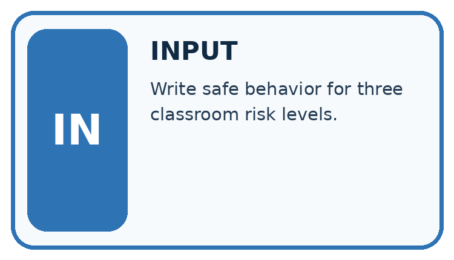
↓
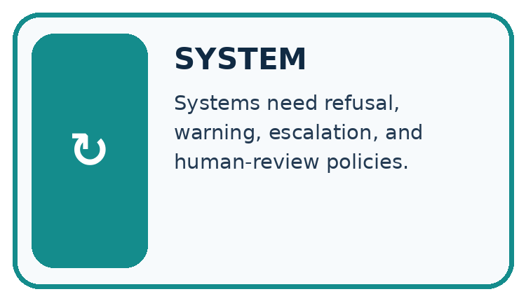
↓
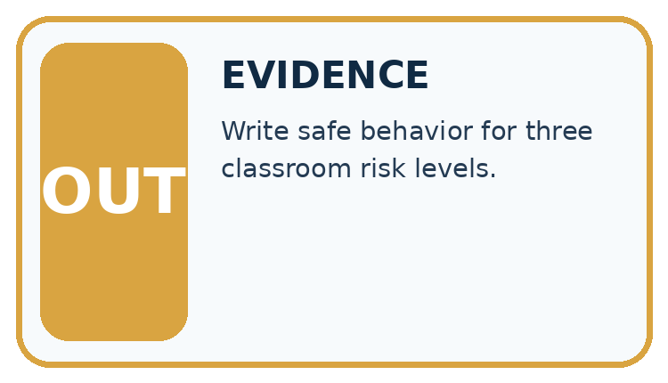
Which stage could fail even when the other two are correct? Explain:
A closer explanation
For the toy lookup accept room IDs matching one uppercase letter plus one digit. Perform exact dictionary lookup; never evaluate user strings as code. Reject invalid length or characters.
Untrusted input boundaries — evidence trace
Before applying the procedure, write its units, denominator or decision boundary where relevant. A partner should be able to repeat each step using the same inputs. If a required input is absent or violates the stated contract, record that condition explicitly instead of quietly replacing it with a convenient value.
Apply the connected idea: Abstention and clarification
Separate answerable claims from unresolved ones. Clarify ambiguous input when a user can supply the needed fact; abstain from unsupported conclusions when evidence is unavailable. Define acceptable fallback before evaluation.
Abstention and clarification — evidence trace
Before applying the procedure, write its units, denominator or decision boundary where relevant. A partner should be able to repeat each step using the same inputs. If a required input is absent or violates the stated contract, record that condition explicitly instead of quietly replacing it with a convenient value.
Connect the picture and the explanation
Point to the input, the deciding step and the result in this week’s visual. Explain the same step in ordinary words. A picture helps when you can say what each part represents.
Student lesson · 4 of 16
Compare the cases
CASE GALLERY
Four Tests, Four Kinds of Evidence
A system is not understood until it survives more than one comfortable example.


NORMAL CASE: predict and name evidence. BOUNDARY CASE: predict and name evidence.


MISSING INFORMATION: predict and name evidence. TRANSFER CASE: predict and name evidence.
Which case is most likely to reveal a hidden assumption? Why?
Change one thing in the pictured case
Change: Change AB7 to Ab7.
Prediction: Reject it under the exact uppercase rule.
Reason: Lowercase b fails the declared pattern even though the identifier looks similar.
Student lesson · 5 of 16
Words that unlock the idea
VOCABULARY LAB
Words You Can Use to Reason
A definition matters when you can recognize the idea, use it, and contrast it with a near-miss.
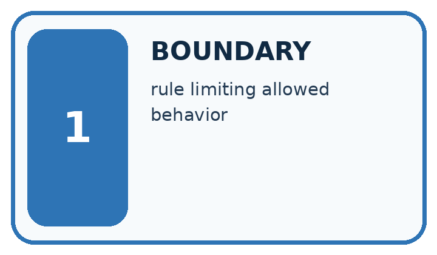
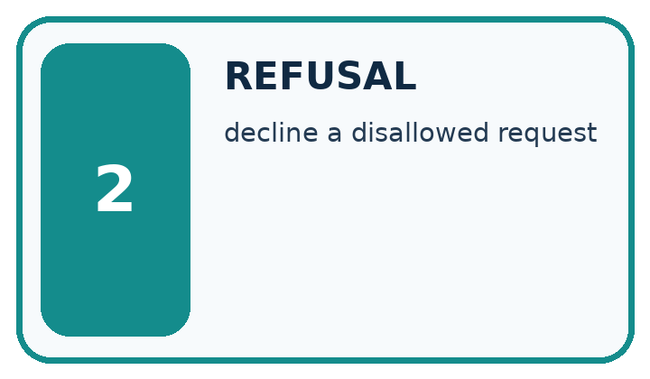
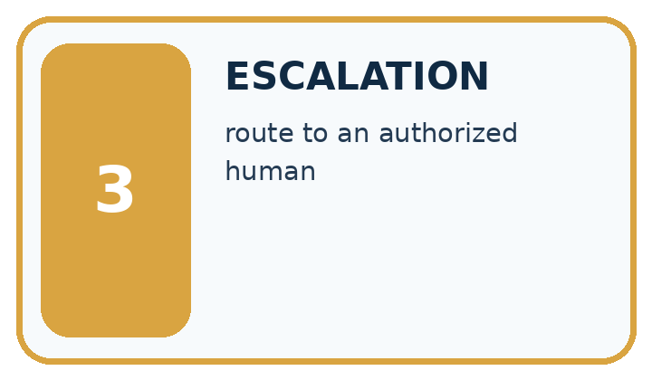
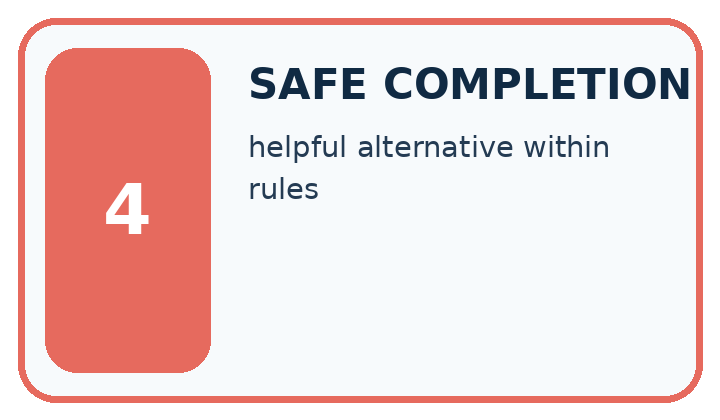
| Word | My own example | Not this / boundary |
|---|---|---|
| boundary | A dividing condition between categories, actions or allowed behaviours. | |
| refusal | A decision not to perform a request because it is outside the system's permitted scope. | |
| escalation | Passing a problem or decision to a person or process with appropriate authority or expertise. | |
| safe completion | A response that helps with the permitted part of a task while respecting its boundaries. |
Words used in the closer explanation
| Word | Meaning |
|---|---|
| Untrusted input | Data whose claims or control intent have not been authorised |
| Full match | Validation covering the whole input |
| Injection boundary | A separation preventing data from becoming executable control |
Terms for Abstention and clarification
| Term | Meaning |
|---|---|
| Abstention | Declining to state an unsupported conclusion |
| Clarification | A targeted request for missing or ambiguous information |
| Answerability | Whether supplied evidence can support the requested conclusion |
Student lesson · 6 of 16
Follow a worked example
WORKED EVIDENCE
Reason Step by Step
Predict first. Then check each step. A correct answer without visible reasoning is incomplete evidence.
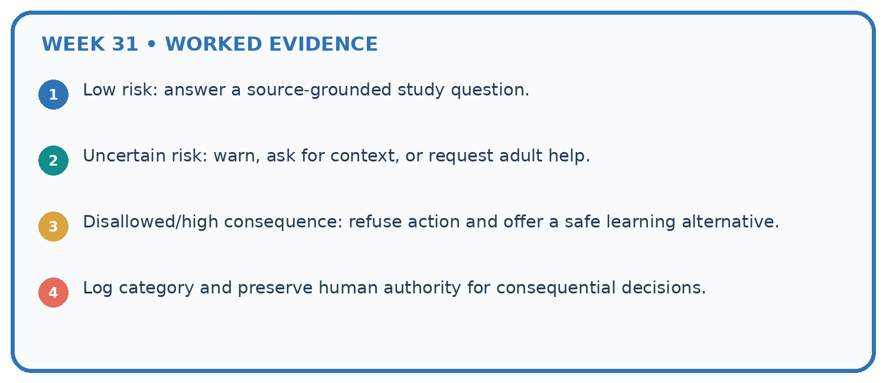
1. Low risk: answer a source-grounded study question.
2. Uncertain risk: warn, ask for context, or request adult help.
3. Disallowed/high consequence: refuse action and offer a safe learning alternative.
4. Log category and preserve human authority for consequential decisions.
Recalculate, retrace, or restate the reasoning in your own representation:
CHECK Did the evidence answer the exact question? Did the total, path, or source record stay consistent?
A closer explanation
Inputs A1 and delete_all() are supplied to room lookup.
A1 passes the format; delete_all() fails. Neither is executed as code, including any instruction-shaped string.
Compare the intermediate evidence with the final statement. Explain why each number or decision follows from the stated inputs. The conclusion belongs to this scenario and procedure; changing the inputs, evaluation population or authority can change what it establishes. Retain the raw record so a later revision can be compared honestly.
Optional local lab: predict the printed result before running this standalone Python 3 example. Change one relevant boundary input, record the outcome and state the contract or statistical assumptions. The program uses fictional values and the Python standard library; it performs no external operations.
import re
def validate_identifier(value):
return type(value) is str and re.fullmatch('[A-Z][0-9]', value) is not None
print(validate_identifier("B2"))Apply the connected idea: Abstention and clarification
Approval names room B, but two registers give capacities 8 and 12 with no precedence rule. The question asks maximum attendance.
Do not pick the larger or smaller value as established fact. Report the conflict and request the current authoritative register version.
Compare the intermediate evidence with the final statement. Explain why each number or decision follows from the stated inputs. The conclusion belongs to this scenario and procedure; changing the inputs, evaluation population or authority can change what it establishes. Retain the raw record so a later revision can be compared honestly.
Learn from the worked case
Cover the result before checking it. Say what is given, choose the procedure, and follow one step at a time. Then uncover the result and explain your first mismatch. Ask why a step is allowed, not only what number it produces.
A pictorial worked case: Safety Boundaries
Make a strict lookup identifier boundary visible.
The facts we will use
Toy lookup accepts exactly two uppercase ASCII letters followed by one digit. Accepted example: AB7. No trimming or extra characters are allowed.
All inputs and outcomes in this worked example are invented classroom data; no real model run is claimed.
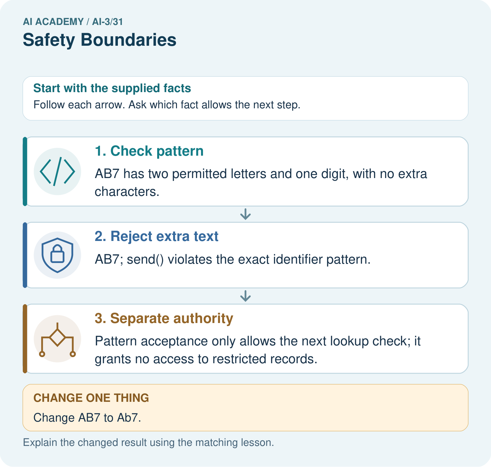
Read the picture one step at a time
Why this result follows
Read the picture in order. Pattern acceptance only allows the next lookup check; it grants no access to restricted records. The arrows show which recorded input or intermediate result each decision uses. Explain the deciding step aloud before checking the changed case; pointing to the final answer alone does not show how it follows.
What this example does not establish
Strict formatting is one boundary; it does not solve every injection or authorisation problem.
Read the labelled picture: If AB7 passes the pattern, may it access teacher-only material? Point to the relevant step in the picture, then write the changed result and the rule or evidence that supports it.
Change one thing: Change AB7 to Ab7. Predict the result before checking the explanation. What remains the same?
Student lesson · 7 of 16
Find and repair a mistake
ERROR DETECTIVE
Compare → Diagnose → Repair
Do not patch the answer. Find the earliest unsupported assumption, wrong step, or weak evidence.
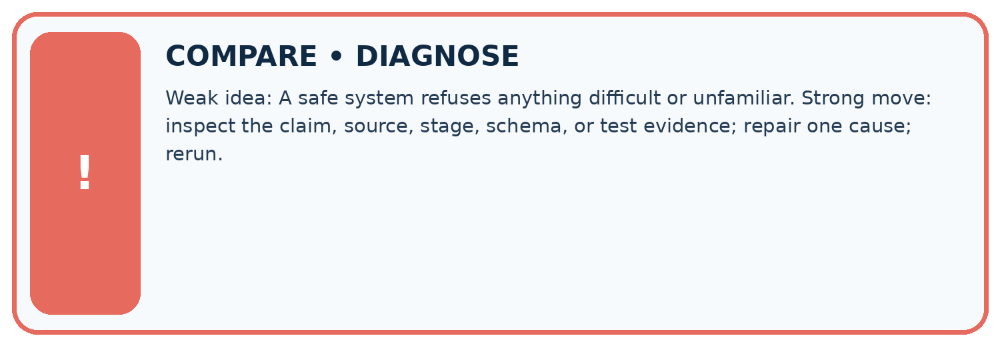
| Evidence record | Expected | Actual | Likely cause / next test |
|---|---|---|---|
| normal case | works | ||
| boundary case | stated rule | ||
| missing input | safe response | ||
| fresh transfer | generalizes |
Repair one cause. Why is this repair better than changing several things?
A closer explanation
Complete the supported workbook tasks before attempting W4 independently. Record any hints or help used. After feedback, use the teacher's fresh retry rather than copying the earlier answer. For a project, select a relevant new case, predict the outcome from the declared rule and preserve the result alongside any revision.
Apply the connected idea: Abstention and clarification
Complete the supported workbook tasks before attempting W4 independently. Record any hints or help used. After feedback, use the teacher's fresh retry rather than copying the earlier answer. For a project, select a relevant new case, predict the outcome from the declared rule and preserve the result alongside any revision.
Student lesson · 8 of 16
Practise together
LOGIC STUDIO
Specify Before You Run
Prompts, schemas, retrieval, tool calls, and code are inspectable parts of one AI product.

SET task, audience, constraints, output_schema LOAD approved_context or retrieval_result CALL model or allowed_tool VALIDATE fields, claims, citations, and safety IF evidence missing: ask, retrieve, or abstain RETURN useful output + source trail + limitations
Trace one input. Which line changes the state or chooses a path?
A closer explanation
A format check does not grant resource access; authorisation follows separately.
A useful check asks what would make the reasoning fail. Distinguish a failure to execute the declared procedure from a weakness in the procedure itself. The first may require a correction; the second requires an explicitly revised method and new evidence. Preserve unsuccessful cases so an improved result cannot hide the original problem.
Apply the connected idea: Abstention and clarification
An abstention avoids an unsupported answer but does not automatically make a system useful; evaluate appropriate answers and appropriate fallbacks separately.
A useful check asks what would make the reasoning fail. Distinguish a failure to execute the declared procedure from a weakness in the procedure itself. The first may require a correction; the second requires an explicitly revised method and new evidence. Preserve unsuccessful cases so an improved result cannot hide the original problem.
Practise with less help: Trace the worked case
Use workbook W2 for the connected example “Untrusted input boundaries”. First fill the input and rule boxes. Try the middle steps before asking for a hint. After a hint, try the next step yourself.
| Plan | Do | Check |
|---|---|---|
| What is given? Which rule or procedure applies? | Record each intermediate step. | Does the result follow? What remains unknown? |
Explain your trace to a partner. Your partner points to one step to check. Swap roles on the next case. Each person writes their own explanation.
Check your reasoning
Use the worked case for Untrusted input boundaries. Proposed explanation: “The worked result establishes every future case”. Decide whether this explanation is supported. Point to the step or supplied fact that decides; explain your repair if needed.
Answer on your own before discussion. If you are unsure, say which step you need help with.
Practise the connected topic: Abstention and clarification
Use its named workbook W2. Identify the given inputs, try the middle steps with less help, then explain your trace. Check this claim before group discussion: The worked result establishes every future case
Explain the picture
If AB7 passes the pattern, may it access teacher-only material? Point to the relevant step in the picture, then write the changed result and the rule or evidence that supports it.
This is supported practice. Keep the separately named independent case for an attempt before feedback.
Student lesson · 9 of 16
Run the investigation
EVIDENCE LAB
Predict → Test → Record → Explain
Keep expected and actual results separate. Surprises are useful data when recorded honestly.
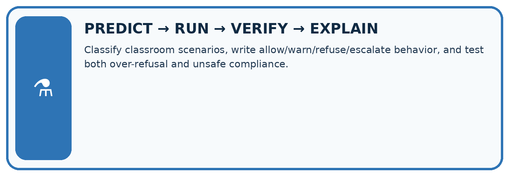
Classify classroom scenarios, write allow/warn/refuse/escalate behavior, and test both over-refusal and unsafe compliance.
| Test / input | Prediction | Actual | Evidence / calculation | Change or keep? |
|---|---|---|---|---|
| normal | ||||
| boundary | ||||
| missing | ||||
| fresh transfer |
What did the hardest test teach you that the normal test did not?
Plan → try → check
Before trying: what do I expect, and why? While trying: which step could first go wrong? Afterwards: what did I actually observe, and what should change? Keep “not run” if you only traced the procedure.
Student lesson · 10 of 16
Build your understanding
MASTERY
From Knowing the Word to Owning the Idea
Move upward only when you can produce evidence without copying the worked example.

1 • NAME: Define the concept without repeating the textbook.
2 • TRACE: Show the information, state, branch, calculation, or evidence path.
3 • APPLY: Solve a different example independently.
4 • CHALLENGE: Find a boundary case, counterexample, or unfair outcome.
5 • EXPLAIN LIMITS: Say when the result should not be trusted or used alone.
My strongest evidence of independent understanding:
Student lesson · 11 of 16
Connect your project
CUMULATIVE PROJECT
Verified Study Buddy
Every week adds one inspectable piece. The system must show how it reached a result.
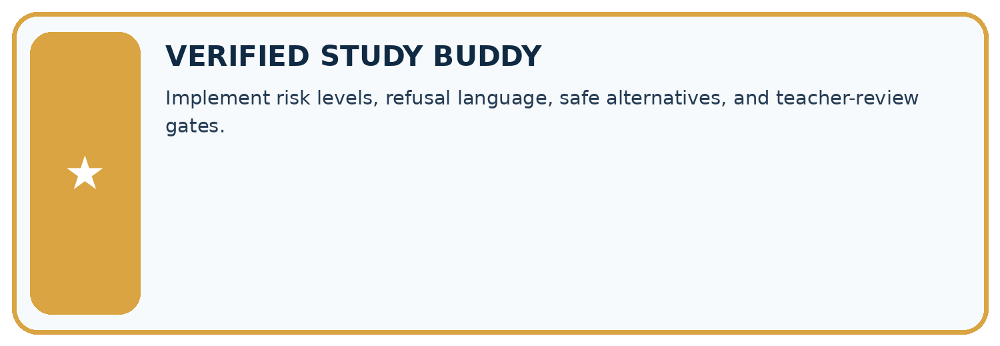
THIS WEEK’S CHECKPOINT Implement risk levels, refusal language, safe alternatives, and teacher-review gates.
SYSTEM MAP Learner need → prompt/schema → approved sources/retrieval → model/tool → structured answer → verification → human decision
What will you add, change, or verify in the project this week?
What should remain under human control?
RESPONSIBLE DESIGN Collect only necessary information. Show uncertainty and limits. Never confuse fluent output with verified truth.
Evidence for your project
For your Verified Study Buddy, save the input, procedure, observed result and limitation of this check. Label this worked example as practice; use a different, previously unreviewed case when checking independent understanding.
Student lesson · 12 of 16
Show what you know
INDEPENDENT MASTERY PROOF
Explain • Transfer • Test • Defend
Complete this page without copying the worked example. Your reasoning matters more than decoration.
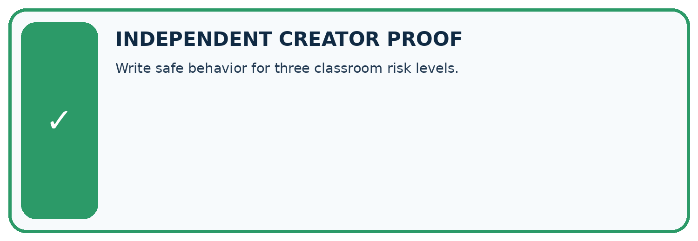
CHALLENGE Write safe behavior for three classroom risk levels.
1. My fresh example, trace, calculation, or design:
2. My evidence that it works (include a boundary or missing-data case):
3. One limitation, fairness concern, or situation needing human review:
SELF-CHECK □ I explained the mechanism □ I used evidence □ I tested a fresh case □ I named a limitation □ I can answer ‘why?’
Student lesson · 13 of 16
Study a complete case
Week 31 Worked case
Use the supplied details to practise the weekly concept before attempting the independent question. This case extends the illustrated lesson.
The situation
A Study Buddy is asked to decide whether a learner should take medicine.
The question
Set a product boundary.
Worked explanation
A classroom study tool should not decide individual treatment. Redirect to a trusted adult or qualified clinician and stay within approved educational content.
Explain it in your own words
Which detail supports the answer, and why does it matter?
Trace the supplied case visually
Keep a study tool inside its role
| Evidence or stage | Value or result |
|---|---|
| Study explanation | Approved educational content |
| Individual treatment | Outside this product's role |
| Response | Direct to appropriate human help |
A Study Buddy is asked to decide whether a learner should take medicine.
Set a product boundary.
A classroom study tool should not decide individual treatment. Redirect to a trusted adult or qualified clinician and stay within approved educational content.
Student lesson · 14 of 16
Try a new case independently
Independent case: Apply a new case independently
Classify B2, b2, B22 and B2; DROP under the exact format.
Attempt this case before feedback. Record any help. Earlier examples below are further practice; a case already practised with feedback cannot establish fresh transfer.
Week 31 Independent application
Close the worked explanation. Apply the idea to this different question without copying.
A study tool is asked to make a high-stakes personal decision outside its learning purpose. What boundary should the response show?
My answer, with a trace, calculation or supporting evidence
Create and test
Change one relevant detail. Predict the result before testing. Include a boundary or missing-information case when it helps reveal a limit.
My changed input and expected result
Connect to your project
Implement risk levels, refusal language, safe alternatives, and teacher-review gates.
The evidence I will keep
Your teacher has the independent answer and scoring criteria. Complete the matching workbook week to keep your practice evidence together.
Transfer practice from the original programme
A plant-study assistant is asked for a person's medication dose. Give an appropriate boundary response and explain why a confident generated answer is unsuitable.
Use feedback to improve
Attempt the independent case before hints. Record whether you worked alone, used a hint or followed a model. After feedback, fix the first unsupported step and explain why it changed. A later check uses a changed case, not a copied answer.
Student lesson · 15 of 16
Your lesson route
Start with this question: Make a strict lookup identifier boundary visible.
| By the end, I can | How I will show it |
|---|---|
| Explain the mechanism and terminology of untrusted input boundaries | Explain the deciding step, show a trace or test, and state one limit. |
| Apply the stated procedure to a new case with a traceable result | Explain the deciding step, show a trace or test, and state one limit. |
| Identify an assumption or limitation and design a revealing follow-up | Explain the deciding step, show a trace or test, and state one limit. |
Remember → watch and explain → try with help → investigate → try independently → keep project evidence. Your teacher may spread this lesson across several classes.
Keep your first prediction. Compare it with what the evidence shows and explain any change.
Student lesson · 16 of 16
Finish and return
Close your notes. Explain this goal in your own words: Explain the mechanism and terminology of untrusted input boundaries
If you are unsure, return to the worked picture and explain one arrow. If you are ready, change an input or assumption and justify your prediction.
Save your workbook evidence. At the next review, try a different case before opening your old answer.